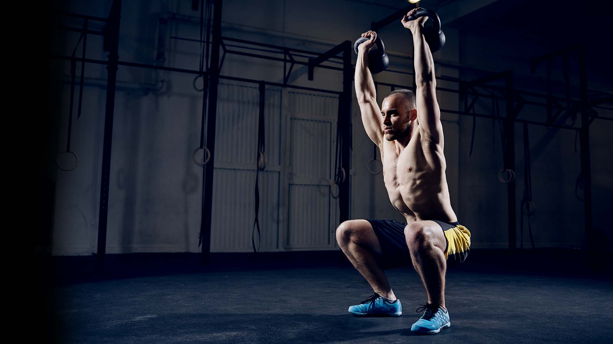
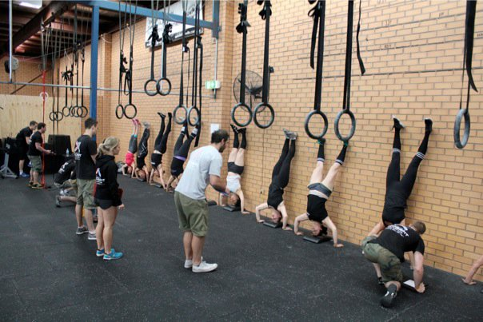
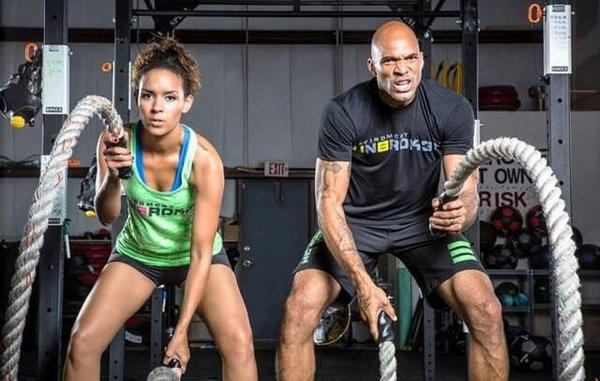

AE Grupo Personal
O melhor conceito em saúde e bem estar!
CrossFit
CrossFit é o principal programa de treinamento de força e condicionamento físico usado em muitas
academias de polícia, grupos de operações táticas
(como SWAT), unidades de operações especiais do exército
americano (como os US Marines), por campeões de artes marciais e centenas de outros atletas
de elite e profissionais
pelo mundo, assim como por mães, avós,
crianças e até mesmo pessoas com necessidades especiais.
Nosso programa proporciona um tipo
de condicionamento físico que por definição é amplo, geral e inclusivo;
ou seja, nossa especialidade é não sermos especializados.

Treinando CrossFit, buscamos desenvolver e melhorar todas as nossas capacidades físicas,
são elas: resistência cardiovascular
(respiratória), resistência muscular, força, flexibilidade, precisão, potência, agilidade, equilíbrio, coordenação e velocidade.
Por meio de um programa único de treinamento baseado em movimentos naturais, funcionais e sempre variados,
o CrossFit garante um treino completo, diferenciado, desafiador e altamente eficiente, tanto mentalmente como
esteticamente, e para toda nossa saúde em geral.
Beneficios do Crossfit:
- Aumento da força
- Redução de medidas e percentual de gordura
- Melhora na flexibilidade
- Melhora na capacidade cardiovascular e respiratória
- Aumento de explosão e velocidade
- Aumento de resistência muscular
- Melhora no equilíbrio
- Redução de stress
- Definição de tônus muscular
- Treinamento altamente eficiente aonde em menos tempo pode-se atingir resultados incríveis
- Treinamento que fortalece o corpo por inteiro
- Excelente treino preparatório para atletas
- Espírito de equipe
- Aumento da auto-confiança
- Melhora no desempenho em corridas de longa e curta distância
- Prevenção de lesões, quando praticado com o auxílio de profissionais qualificados
- Aumento de energia<
- ode ser praticado por qualquer pessoa, inclusive grávidas, idosos e crianças, desde que acompanhado por profissionais qualificados
Como e feito o Crossfit ?
A palavra chave dessa técnica é funcionalidade. O Crossfit trabalha os exercícios de forma que
o foco principal é a precisão dos movimentos e a agilidade com a qual ele é feito. Aqui não adianta fazer
de qualquer maneira e ser rápido. Se o pensamento for esse, você terá sérios problemas articulares e musculares
em pouco tempo, já que essa modalidade de exercícios trabalha com todo o corpo em apenas um único treino. Como ele se
enquadra num treinamento global, você consegue perder gordura e adquirir massa magra, mas os ganhos de hipertrofia muscular
não podem ser comparados ao das academias. No Crossfit o tempo para se adquirir massa muscular é bem maior do que nas academias,
portanto, se você está procurando um corpo musculoso em pouco tempo, essa não é a melhor forma de treino.

Quem pode fazer o CrossFit ?
Qualquer um pode fazer o Crossfit. Por ser uma modalidade de treino muito versátil, ele consegue
se adaptar a varias pessoas independentemente de sexo ou idade. Os idosos, principalmente, têm muito a ganhar
com esse tipo de treino porque ele não faz apenas fortalecimento muscular, o crossfit mobiliza articulações, treina
o equilíbrio e a adaptação rápida e eficaz de diferentes movimentos e em diferentes graus de dificuldade. Essa questão
do nível de complexidade dos exercícios é uma excelente maneira de fazer com que qualquer um, sem qualquer prática em nenhum
esporte, possa se tornar um excelente atleta com o esse tipo de treinamento.

HORÁRIOS
| Segunda | Terça | Quarta | Quinta | Sexta | Sábado |
| 07:00 á 08:00 | | 07:00 á 08:00 | | 07:00 á 08:00 | |
| . | | | | | |
| 14:00 á 15:00 | | 14:00 á 15:00 | | 14:00 á 15:00 | |
| . | | | | | |
| 18:00 á 19:00 | | 18:00 á 19:00 | | 18:00 á 19:00 | |